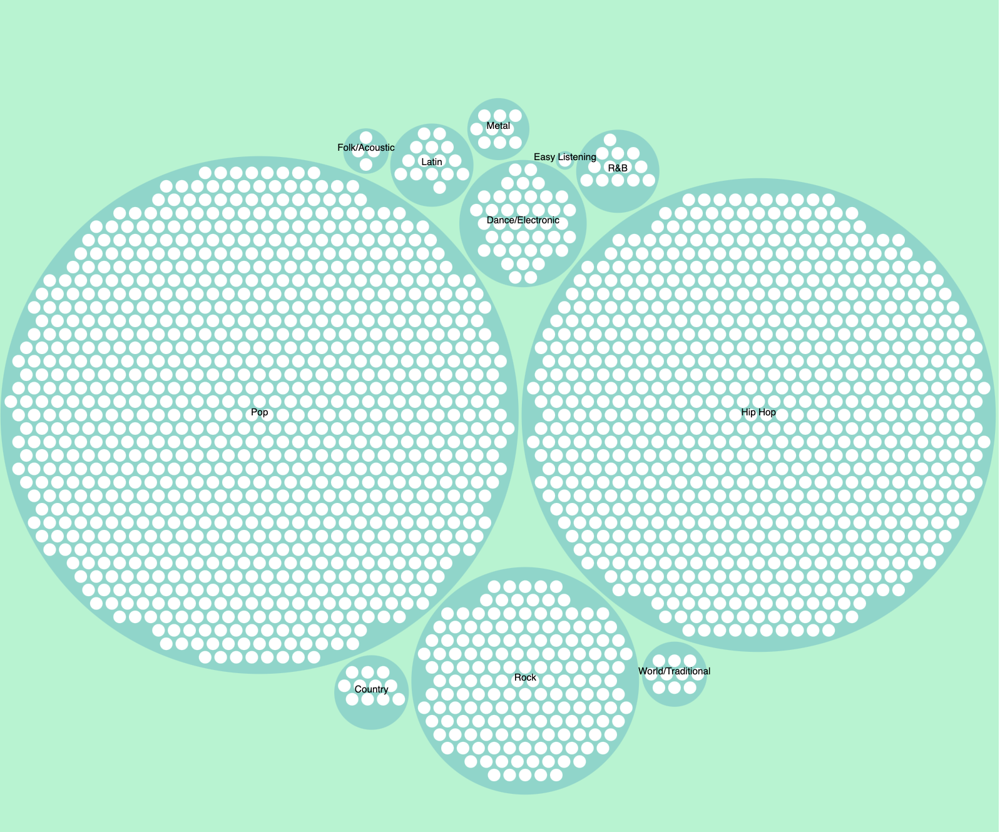

About
Bar Chart
Scatter Plot
Circle Packing
Star Plot
Welcome to our data visualization project!

Should be set with js
Should be set with js
Should be set with js
Should be set with js
Select X-Axis